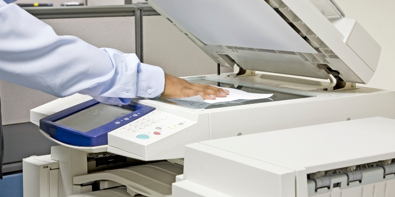

Ksero małoformatowe
Ksero małoformatowe – Powielanie , kopiowanie map, planów, projektów technicznych, rysunków architektonicznych, materiałów projektowych, rysunków technicznych na papierze, kalce lub folii powyżej formatu A-3 (297mm X 420mm) nazywamy potocznie kopiowaniem wielkoformatowym lub kserokopią wielkoformatową.
A4 mono
0,30złA3 mono
0,60złA4 mono na kalce technicznej
1,50złA3 mono na kalce technicznej
2,50złA4 kolor na kalce technicznej
1,50 – 4,50złA3 kolor na kalce technicznej
2,50zł - 6,50złA4 kolor
1,50 - 4,00złA3 kolor
2,00 - 6,00złźródło opisu z ksero-tecza.pl